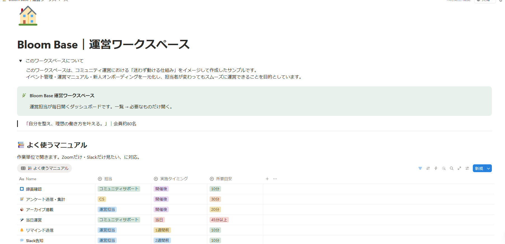

BEFORE
頭の中だけでタスクを抱えている
やること・確認すること・依頼したことが散らばり、いつも何かを気にしている状態。
↓
AFTER
次にやることが見える形に整理される
管理表・チェックリスト・進行フローに落とし込み、抜け漏れの不安を減らします。
DOES THIS SOUND FAMILIAR?
目の前の仕事は回っている。でも、確認・連絡・入力・管理に追われて、本当に進めたいことが
後回しになってしまう。そんな状態を、業務の整理と実務サポートで軽くしていきます。
日々の業務に追われ、本来取り組みたい仕事が後回しになっている
タスクや情報が散らばり、抜け漏れや確認の手間が増えている
業務を任せたいけれど、何から切り出せばよいか分からない
AFTER SUPPORT
単に作業を代行するだけでなく、「誰が・いつ・何をするか」が見える状態に整え、
安心して本業に集中できる時間を増やします。
やること・確認すること・依頼したことが散らばり、いつも何かを気にしている状態。
管理表・チェックリスト・進行フローに落とし込み、抜け漏れの不安を減らします。
日程調整、リマインド、請求・勤怠まわりの確認などで、本来の仕事が後回しに。
日々の細かな実務を切り出し、作業に追われる時間を減らしていきます。
やり方が人や記憶に頼っていて、誰かに任せるたびに説明や確認が発生する。
マニュアル化・テンプレート化・ツール活用まで整え、続けやすい運用にします。
WHY WORK WITH ME
依頼された作業だけでなく、目的や現状を確認し、より進めやすい方法をご提案します。
総務・労務・経理、ひとり事務、社労士事務所での経験を活かし、正確性が求められる業務にも対応します。
早めの返信と先回りした確認を心がけ、「安心して任せられる」と評価をいただいています。
SUPPORT EXPERIENCE
個人事業主様・中小企業様を中心に、バックオフィス業務から運営サポートまで
継続して担当しています。
PORTFOLIO SAMPLE
実務経験をもとに、業務整理・運営管理を想定したサンプルを制作しています。

NOTION / OPERATION DESIGN
月例勉強会や交流イベントを継続的に運営する想定で、Notionを使った管理システムを制作しました。
※架空のコミュニティを想定した自主制作です。
GOOGLE SHEETS / TASK MANAGEMENT
担当者が変わっても迷わず動ける状態を目指し、毎月繰り返す運営業務を管理できるスプレッドシートを制作しました。
※架空のコミュニティを想定した自主制作です。
SERVICES
上記以外も、現在の業務やお困りごとを伺ったうえで、対応方法をご提案します。
CLIENT VOICES
継続してご依頼いただいているお客様から、対応の速さや丁寧さ、
先回りしたサポートについて評価をいただいています。
「返信や対応が早く、安心して任せられる」
スクール運営者「細かな部分まで気づき、先回りして対応してくれる」
個人事業主「相談しながら一緒に進められるので心強い」
企業ご担当者PROFILE
愛知県在住。2児の母。表に立つ人が力を発揮できるよう、業務や環境を整えるサポートが得意です。
製造業や社労士事務所などで、総務・労務・経理を中心に10年以上バックオフィス業務を経験。約250名分の勤怠管理・給与計算や、ひとり事務として経理・総務・営業事務を幅広く担当してきました。
現在はオンライン秘書として、個人事業主・中小企業のバックオフィス支援、進行管理、運営サポート、業務改善に携わっています。
ポートフォリオをご覧いただきありがとうございます。「何を任せられるか、まだ整理できていない」という段階でも大丈夫です。Googleフォームから現在のお困りごとをお送りください。必要なサポート内容を一緒に整理いたします。